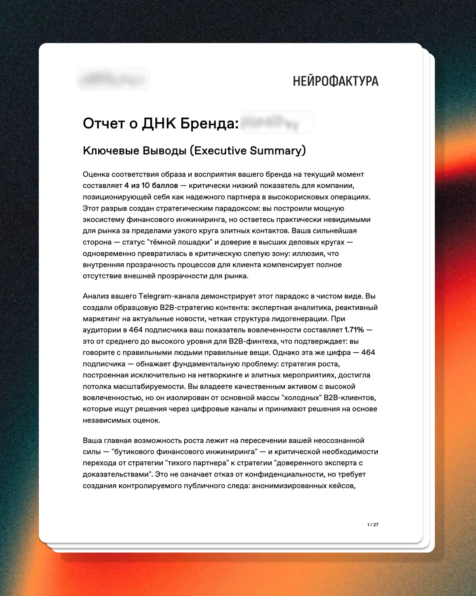
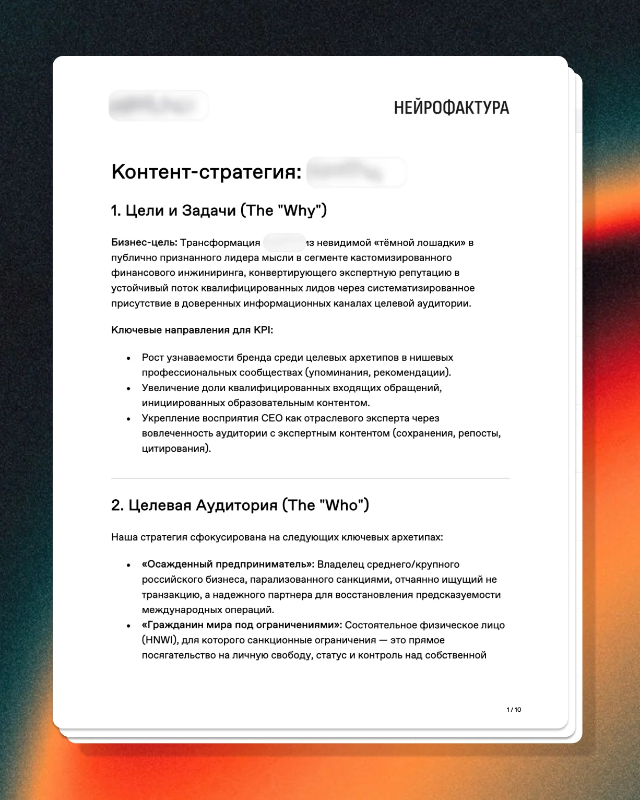
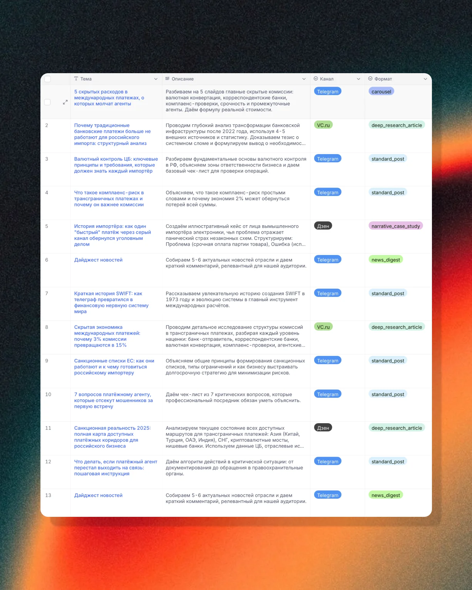
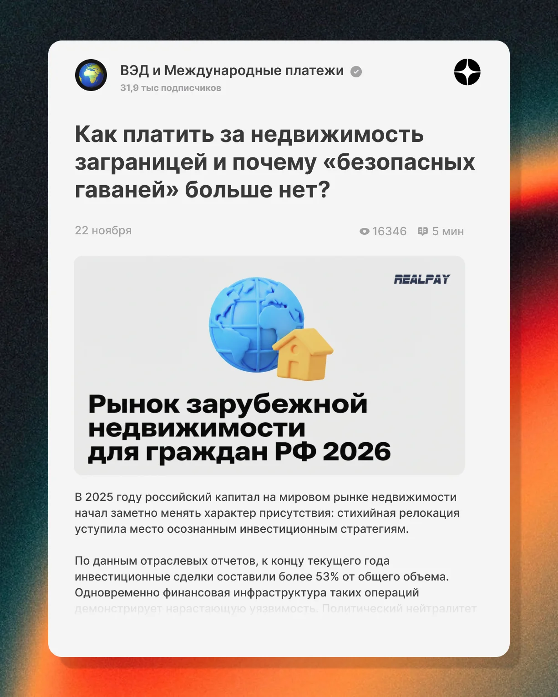

Кейс // 002
Финансовая
логистика и ВЭД
О ПРОЕКТЕ
Клиент работает в одной из самых сложных и турбулентных ниш — трансграничные переводы, AML-скоринг и международный комплаенс. Нашей задачей было закрепить за брендом статус непререкаемого эксперта в условиях деглобализации, где правила игры меняются еженедельно.
ЗАДАЧА
Контентная стратегия требовала работы на двух скоростях. С одной стороны — мгновенная реакция на изменения: новые санкции и вводные. С другой — фундаментальная аналитика и «вечнозеленые» лонгриды: например, ретроспектива изменения расчетов с Китаем за последние два года. Традиционный отдел аналитики не справлялся бы с таким сплитом задач. Клиенту требовалась система, способная как фильтровать новостной шум, так и проводить глубокие кабинетные исследования.





РЕШЕНИЕ
Мы развернули двуконтурную ИИ-архитектуру, закрывающую обе потребности:
Контур 1: AI-Newsroom. Настроили real-time мониторинг 25+ Tier-1 ресурсов (РБК, Коммерсантъ, нишевые каналы по ВЭД). Система просеивает поток через фильтры интересов нашей ЦА и при обнаружении критического инфоповода выдает формат «молнии» — готовую экспертную трактовку события простым языком.
Контур 2: Мультиагентный Deep Research. Для создания сложных лонгридов мы внедрили каскадную работу роя агентов. Процесс разбит на роли: Агент-Стратег формулирует запрос -> Агент-Ресерчер собирает историческую фактуру -> Агент-Аналитик интерпретирует данные -> Агент-Копирайтер пишет драфт. Финальный этап — Агент-Редактор «гуманизирует» текст, полностью вычищая ИИ-паттерны, чтобы материал читался как авторская колонка senior-эксперта.
Контур 1: AI-Newsroom. Настроили real-time мониторинг 25+ Tier-1 ресурсов (РБК, Коммерсантъ, нишевые каналы по ВЭД). Система просеивает поток через фильтры интересов нашей ЦА и при обнаружении критического инфоповода выдает формат «молнии» — готовую экспертную трактовку события простым языком.
Контур 2: Мультиагентный Deep Research. Для создания сложных лонгридов мы внедрили каскадную работу роя агентов. Процесс разбит на роли: Агент-Стратег формулирует запрос -> Агент-Ресерчер собирает историческую фактуру -> Агент-Аналитик интерпретирует данные -> Агент-Копирайтер пишет драфт. Финальный этап — Агент-Редактор «гуманизирует» текст, полностью вычищая ИИ-паттерны, чтобы материал читался как авторская колонка senior-эксперта.
РЕЗУЛЬТАТЫ
Внедрение гибридной системы позволило бренду стать для своей B2B-аудитории надежным радаром в мире ВЭД и финансовой логистики. Каналы бренда не просто транслируую новости, а продают ощущение возврата контроля над ситуацией, предсказуемость, прозрачность и снижение рисков.
5
Форматов материалов
15
УЗКОПРОФИЛЬНЫХ АГЕНТОВ
100%
Комплаенс и многоступенчатый фактчекинг